▲ 청록색 외벽이 눈에 띄는 군산근대역사박물관 사진=한국관광공사
군산 원도심은 차를 어디에 세우느냐에 따라 하루가 달라진다. 근대역사박물관·근대미술관·근대건축관·옛 군산세관이 한 도로(해망로)를 따라 붙어 있어 주차 한 번으로 도보 관람이 가능한 반면, 경암동 철길마을은 방문객이 몰리는데도 전용 공영주차장이 마땅치 않다는 지적이 나온다.
이 글은 군산시와 근대역사박물관 공식 안내를 기준으로 원도심 무료 주차 위치, 통합관람권 요금, 도보 동선, 철길마을, 그리고 해 질 무렵의 은파호수공원 야경까지 하루 코스로 정리했다. 새만금 방조제와 고군산군도 드라이브는 새만금 방조제 드라이브 코스 기사에서 다뤘다.
1. "원도심에 차를 어디 세우지?" — 무료 주차 위치부터
군산 원도심(장미동·해망로 일대)은 한국관광공사가 '군산 시간여행마을'로 소개하는 구역으로, 근대역사박물관·호남관세전시관·근대미술관·근대건축관·진포해양테마공원·초원사진관·히로쓰 가옥·동국사 등이 원도심에 흩어져 있다. 시간여행마을 주소는 내항1길 8, 관광안내소 문의는 063-446-5114이다.
주차는 세 갈래 자료를 종합했다. ① 열린관광 자료: 시간여행마을관광안내소 앞 주차장을 무료로 이용할 수 있다고 소개하며, 진포해양테마공원 일원에 장애인 주차구역 2개소가 정비돼 있다. ② 한국관광공사 정보: 근대건축관은 "근대역사박물관·진포해양공원 주차장" 이용 가능, 근대미술관·옛 군산세관도 주차 가능으로 표기. ③ 충전소 정보 사이트: 내항1길 8 공영주차장이 24시간 무료. 다만 군산시 공식 요금표에서는 원도심 주차장을 확인하지 못했으므로 표지판을 꼭 확인해야 한다.
| 장소 | 주차 정보 | 비고 |
|---|---|---|
| 시간여행마을(내항1길 8) | 관광안내소 앞 무료로 소개, 24시간 무료로 등록된 곳도 있음 | 열린관광·충전소 사이트 |
| 진포해양테마공원(내항2길 32) | 일원에 장애인 주차 2개소, 건축관 안내상 이용 가능한 주차장 | 한국관광공사 |
| 근대역사박물관·미술관·세관 | 모두 '주차 가능'으로 표기(박물관 안내소 063-454-5953) | 한국관광공사 |
| 초원사진관 | 주차 불가로 표기 — 인근 주차장 이용 | 한국관광공사 |
| 경암동 철길마을 | 주차 가능·무료로 표기, 그러나 연휴엔 혼잡 | 한국관광공사 / 전북일보 |
| 은파호수공원 | 주차 가능(장애인 주차 4대 표기), 공원 내 주차장 요금은 확인 못함 | 한국관광공사·열린관광 |
📍 2022년 요금 개편 — 원도심은 대상 목록에 없었다
2022년 군산시는 유료 공영주차장의 무료 시간을 기존 10분에서 1시간으로 확대하고 1급지 소형 1일 요금을 6,000원에서 8,000원으로 조정했다. 그러나 전북일보 보도상 적용 대상은 선유2구, 장자1·2, 조촌동 롯데몰 인근(수송동 2곳 추가 예정)이었고 시간여행마을 주차장은 포함되지 않았다. 이 요금 체계를 원도심에 그대로 적용해서는 안 되며, 현장 표지판이 기준이다.
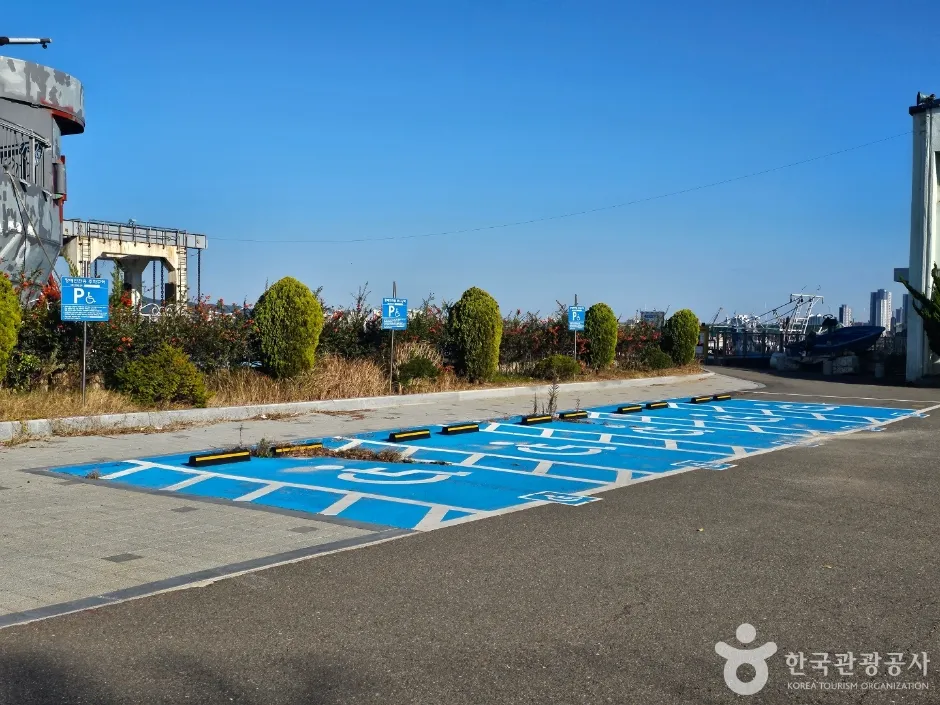
▲ 진포해양테마공원 일원의 주차 공간(장애인 주차 구역 표시) 사진=한국관광공사
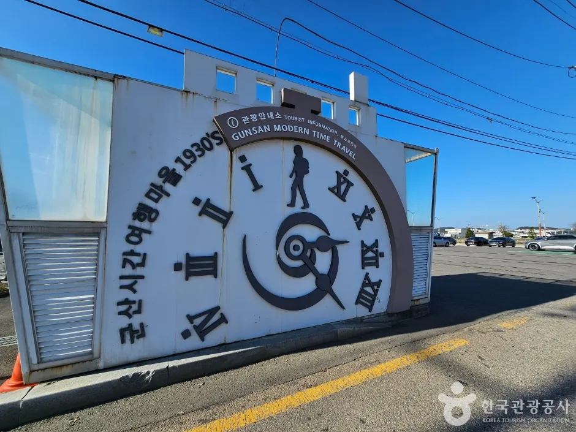
▲ 군산시간여행마을 입구의 시계 모양 안내 조형물 사진=한국관광공사
▲ 청록색 외벽이 눈에 띄는 군산근대역사박물관 사진=한국관광공사
원도심 주차·관광 안내는 군산시 문화관광 페이지에서 확인 가능하다. 군산시 근대역사박물관 안내 바로가기
2. 통합관람권이 개별 구매보다 싸다 — 근대역사박물관 요금·시간
군산근대역사박물관은 해망로 240에 있는 군산 원도심의 출발점이다. 공식 관람안내 기준으로 3~10월은 09:00~18:00(입장종료 17:30), 11~2월은 09:00~17:00(입장종료 16:30)이며 휴관일은 1월 1일, 매주 월요일, 시장이 정한 날이다.
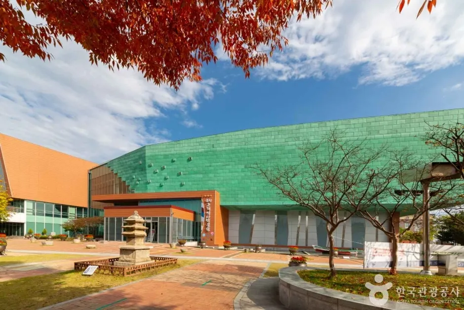
▲ 단풍이 물드는 가을의 박물관 앞뜰 사진=한국관광공사
| 구분 | 개별권(박물관/금강미래체험관) | 박물관 통합권(박물관+미술관+건축관+위봉함) | 금강권 통합권 |
|---|---|---|---|
| 성인 | 2,000원 (1,000원) | 3,000원 (2,000원) | 5,000원 (3,000원) |
| 청소년·군인 | 1,000원 (500원) | 2,000원 (1,000원) | 4,000원 (2,000원) |
| 어린이 | 500원 (300원) | 1,000원 (500원) | 3,000원 (1,000원) |
한국관광공사 소개에 따르면 박물관은 1층 해양물류역사관·어린이체험관·기증전시실, 2층 근대자료규장각실·시민열린갤러리, 3층 근대생활관·기획전시실로 구성된다. 같은 공식 안내에서 건축관·미술관·3.1운동기념관·채만식문학관 개별권은 성인 1,000원, 위봉함은 500원으로 안내된다. 박물관을 포함해 세 곳 이상 볼 계획이라면 통합권(3,000원)이 유리하다. 입장권은 발행 당일에만 사용 가능하고, 6세 이하와 65세 이상 등은 무료 대상이다(신분증 지참).
✅ 요금 계산 체크
· 박물관+근대미술관+근대건축관을 각각 사면 성인 2,000+1,000+1,000=4,000원 → 통합권 3,000원(위봉함 포함)이 저렴
· 원도심 동행투어(모던로드 A코스 10:30·14:00, 약 2시간)는 군산시청 관광진흥과 운영, 문의 063-454-3338
· 월요일은 박물관 휴관이니 주말·평일 화~일 방문을 권한다
관람시간·요금은 박물관 공식 홈페이지에서 확인할 수 있다. 군산근대역사박물관 관람안내 바로가기
3. 같은 해망로에 다 모였다 — 미술관·건축관·세관을 잇는 원도심 도보 코스
박물관(해망로 240)을 기준으로 근대미술관(해망로 230), 근대건축관(해망로 214), 옛 군산세관(해망로 244-7)이 같은 해망로 주소를 공유해 주차 후 걸어 다니기 편하다. 통합권이 이 동선에 맞춰 설계돼 있다.
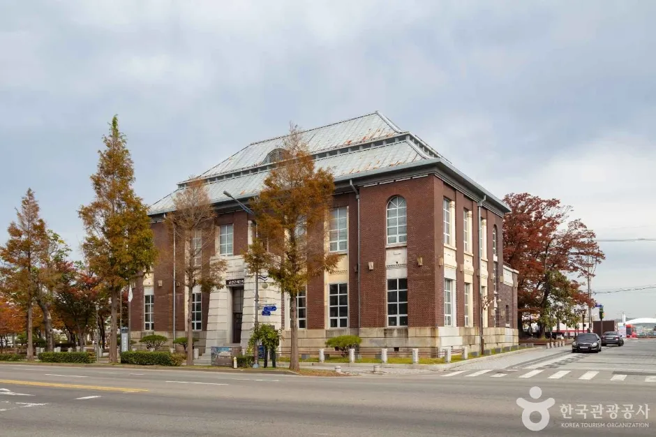
▲ 붉은 벽돌 외벽의 근대건축관(옛 조선은행 군산지점) 사진=한국관광공사
| 순서 | 장소 | 주소 | 포인트 |
|---|---|---|---|
| 1 | 근대역사박물관 | 해망로 240 | 통합권 발권, 3개 층 전시 |
| 2 | 군산근대미술관 | 해망로 230 | 옛 일본 제18은행 군산지점(1907 설립), 2008년 등록문화재 지정 뒤 미술관으로 활용. 본관·금고동으로 나뉘며 금고동에 안중근 여순감옥 재현 전시장 |
| 3 | 근대건축관(구 조선은행 군산지점) | 해망로 214 | 1923년 건립, 붉은 벽돌 건물. 채만식 소설 「탁류」에 등장하는 건물로 소개 |
| 4 | 옛 군산세관(호남관세박물관) | 해망로 244-7 | 1908년 준공, 벨기에산 적벽돌 유럽 양식. 1993년까지 세관 본관으로 사용, 현재 호남관세박물관. 문화관광해설 1일 2회 |
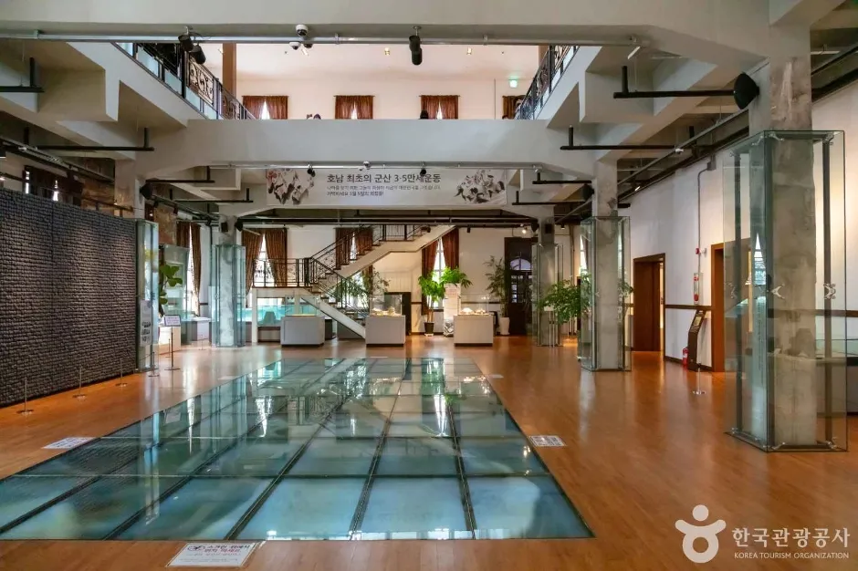
▲ 근대건축관 내부 전시실 사진=한국관광공사

▲ 근대미술관 출입구 사진=한국관광공사
네 곳의 주소가 모두 해망로라 이동 거리는 짧은 편이지만, 전시를 제대로 보려면 반나절이 걸린다. 초원사진관·동국사 등은 박물관에서 거리가 있으므로 지도로 확인한 뒤 차량 이동을 병행하는 편이 낫다.
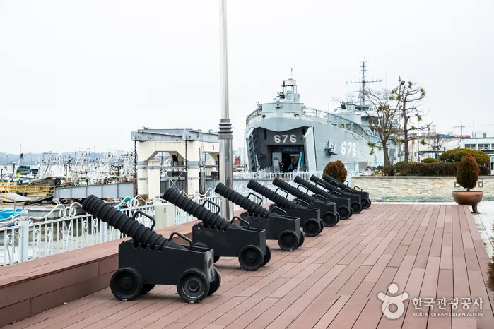
▲ 진포해양테마공원 데크에 전시된 대포와 뒤편 함선 사진=한국관광공사
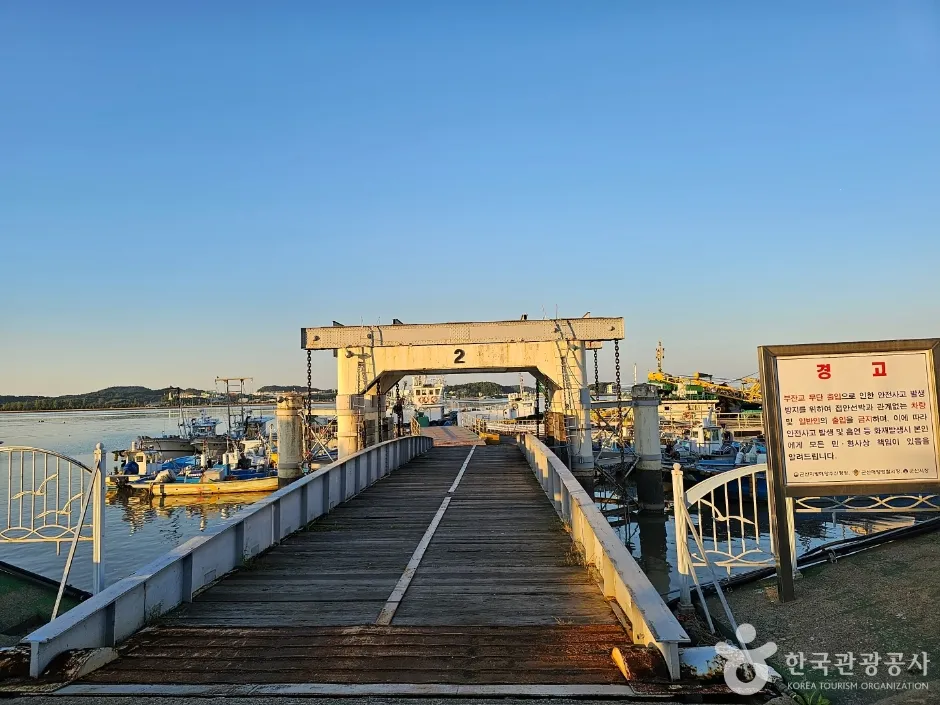
▲ 항구 쪽으로 이어진 나무 잔교와 철골 구조물(진포해양테마공원 일원) 사진=한국관광공사
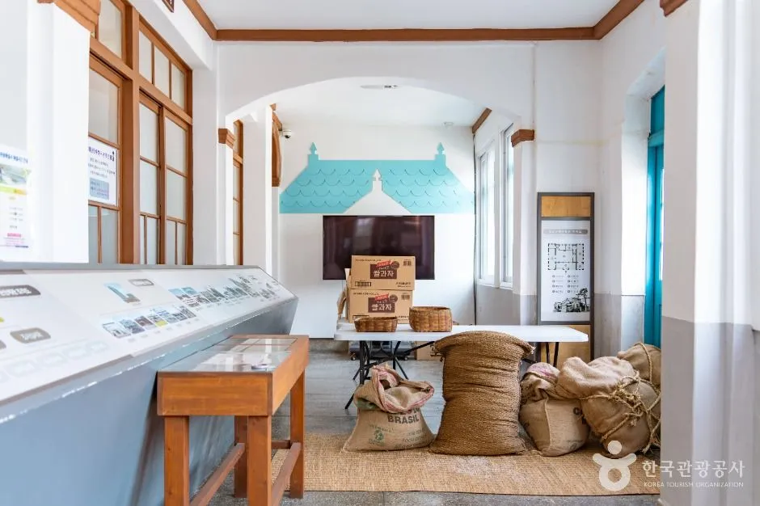
▲ 옛 군산세관 내부 전시 공간 사진=한국관광공사
📍 초원사진관 — 주차 불가, 무료 개방, 첫째·셋째 월요일 휴무
영화 「8월의 크리스마스」(1998) 촬영지로 알려진 초원사진관(신창동 구영2길 12-1)은 군산시가 복원해 무료 개방하고 있다. 한국관광공사 정보 기준 이용시간은 월요일 09:00~18:00, 화~일요일 09:00~21:30이며 매달 첫째·셋째 월요일이 휴무다. 주차는 불가로 표기돼 있어 원도심 주차장에 세우고 걸어가야 한다. 문의 063-445-6879.
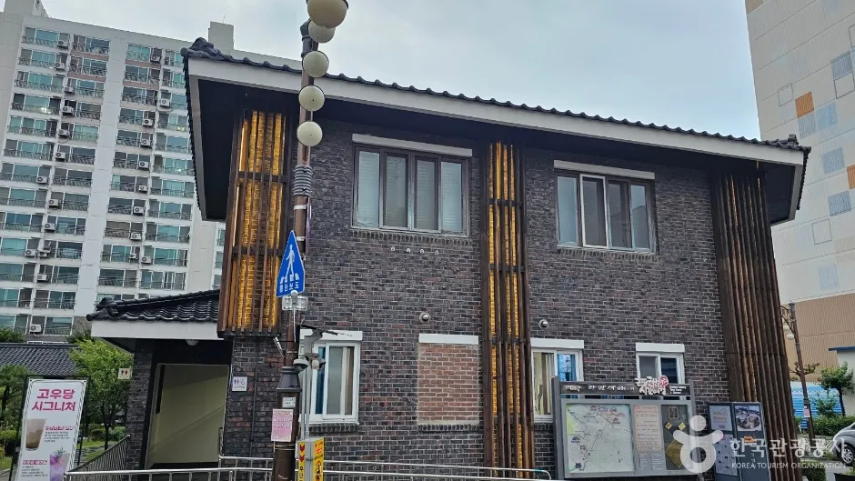
▲ 붉은 벽돌 외벽이 인상적인 초원사진관 외관 사진=한국관광공사
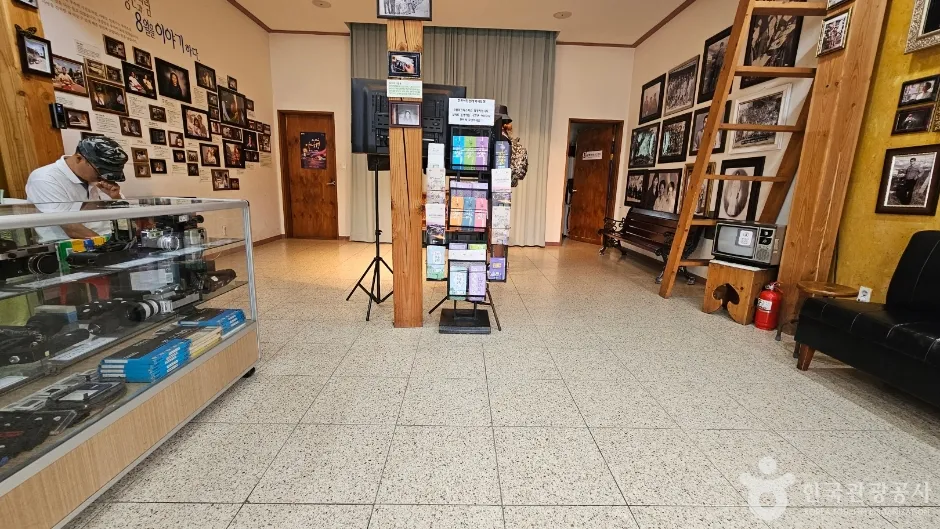
▲ 초원사진관 내부에는 사진 액자와 오래된 카메라가 전시돼 있다 사진=한국관광공사
📍 시간여행마을에는 이런 곳도 있다
한국관광공사는 시간여행마을 명소로 호남관세전시관, 장미갤러리, 진포해양테마공원, 뜬다리(부잔교), 해망굴, 군산 신흥동 일본식 가옥(히로쓰 가옥), 동국사, 군산 3·1운동기념관, 채만식문학관 등을 함께 소개한다. 박물관 동행투어 B코스(타임로드, 약 2시간 30분)가 초원사진관·일본식가옥·말랭이마을·동국사를 잇는다.
4. 기차는 사라졌지만 길은 남았다 — 경암동 철길마을
경암동 철길마을은 1944년 개설된 페이퍼 코리아 공장과 군산역을 잇는 총 연장 2.5km 철로 주변에 형성된 마을이다. 한국관광공사에 따르면 이 철도는 시기별로 북선제지철도·고려제지철도·세풍철도 등으로 불렸고 현재는 '페이퍼 코리아선'으로 불린다. 군산시 공식 관광 안내는 이곳을 연중 개방되는 근대 추억 관광명소로 소개하고 있고, 주소는 군산시 경촌4길 14다. 철도는 일제강점기 신문용지 운송을 위해 놓인 것으로 알려졌다.
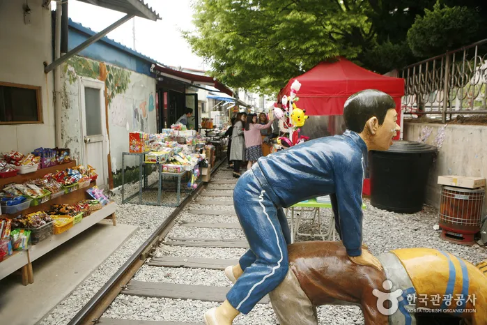
▲ 철길 양옆으로 가게가 늘어선 경암동 철길마을 사진=한국관광공사
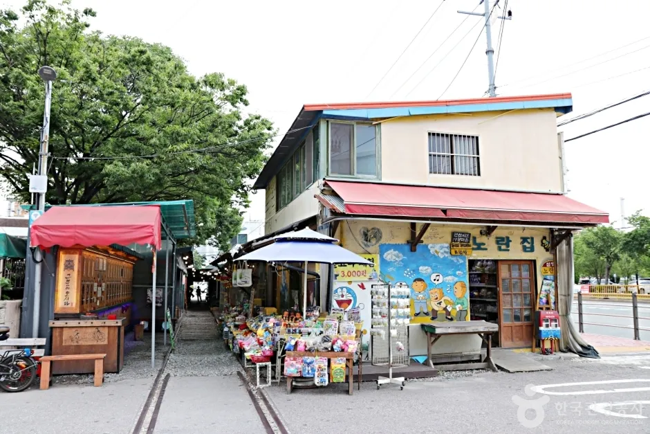
▲ 철길을 따라 상점과 골목이 이어진다 사진=한국관광공사
| 항목 | 내용 |
|---|---|
| 주소 | 전북특별자치도 군산시 경촌4길 14(경암동) |
| 이용시간 | 연중 개방 |
| 입장료 | 공식 안내에 별도 요금 표기 없음(개방형 거리) |
| 편의시설 | 남·여 화장실 있음 (출입구까지 완만한 경사로) |
| 체험 | 뽑기·달고나·딱지 판매, 교복 입고 사진 찍기 등(한국관광공사 소개) |
| 주차 | 한국관광공사 정보는 '가능·무료'로 표기하나, 2024년 보도는 전용 공영주차장 부재로 연휴 혼잡을 지적 |
| 문의 | 063-454-3349 |
전북일보 보도에 따르면 2024년 추석 연휴(9월 14~18일) 철길마을 방문객은 1만 2,453명으로 군산 주요 관광지 중 1위였다. 반면 관광객 만족도 조사에서는 응답자의 32%가 주차 불편을 아쉬운 점으로 꼽았고, 시의원은 "공영주차장이 없다"며 대책을 촉구했다. 연휴·주말에는 원도심 무료 주차장에 차를 두고 이동하거나 이른 아침에 방문하는 방식을 고려할 만하다.
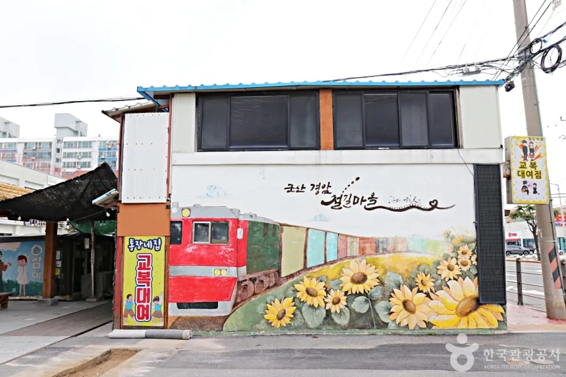
▲ 철길마을 벽면에 그려진 기차와 해바라기 벽화 사진=한국관광공사
철길마을 이용 안내는 군산시 공식 관광 페이지에서 확인 가능하다. 군산시 경암동 철길마을 안내 바로가기
5. 해 질 무렵엔 은파로 — 물빛다리·음악분수·순환도로
원도심 관람을 마치면 은파호수공원으로 이동하기 좋다. 군산시 공식 안내 기준 주소는 은파순환길 9(나운동)이고, 물빛다리 이용시간은 09:00~23:00이다(한국관광공사 정보는 상시 개방·연중무휴). 저수지를 한 바퀴 도는 순환도로는 군산시 공식 안내에서 약 6km로 소개되며(자료에 따라 6.5km로도 적힘), 대동여지도에도 표시된 유서 깊은 저수지다. 1985년 국민관광지로 지정됐다.
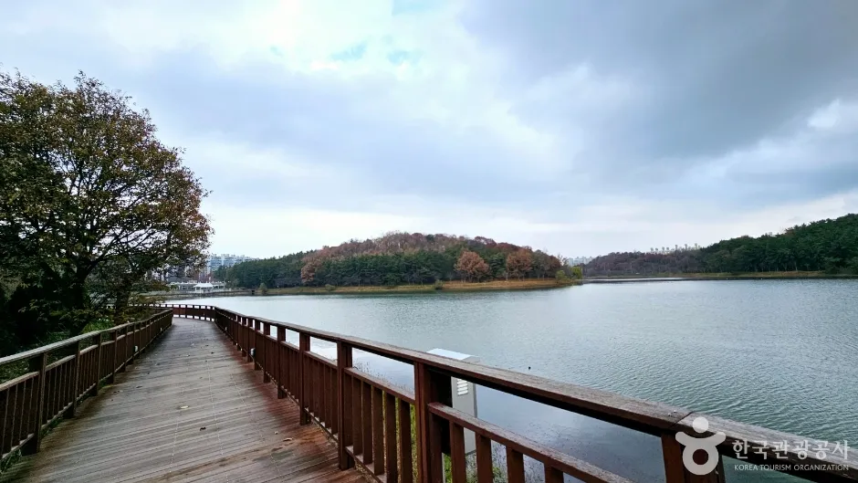
▲ 호수를 따라 이어지는 나무 데크 산책로 사진=한국관광공사
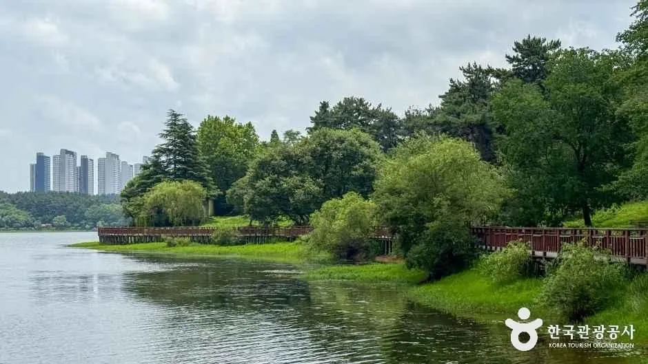
▲ 숲으로 둘러싸인 은파호수의 가을 풍경 사진=한국관광공사
| 항목 | 내용 | 근거 |
|---|---|---|
| 주소·문의 | 군산시 은파순환길 9(나운동) / 은파공원관리소 063-454-4896 | 군산시·한국관광공사 |
| 이용시간 | 물빛다리 09:00~23:00, 공원은 연중무휴·상시 개방 | 군산시 공식 |
| 물빛다리 | 길이 370m·너비 3m 보도 현수교, 야간 조명 | 디지털군산문화대전 |
| 음악분수 | 과거 안내: 꽃잎 형태, 회당 20분·하루 8회. 2022년 보도: 음악 장치 고장으로 12~18시 물줄기만 가동 — 현재 운영 확인 필요 | 디지털군산문화대전 / 전북일보 |
| 순환도로 | 저수지 한 바퀴 약 6km | 군산시 공식 |
| 주차 | 주차 가능(장애인 주차 4대 표기). 요금·주차장 위치는 공식 자료에서 확인 못함 | 한국관광공사 |
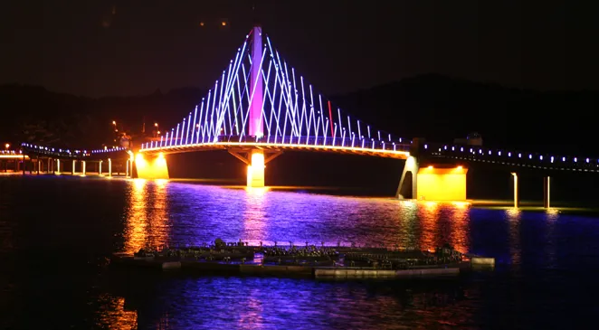
▲ 조명이 켜진 은파 물빛다리의 야경 사진=군산시
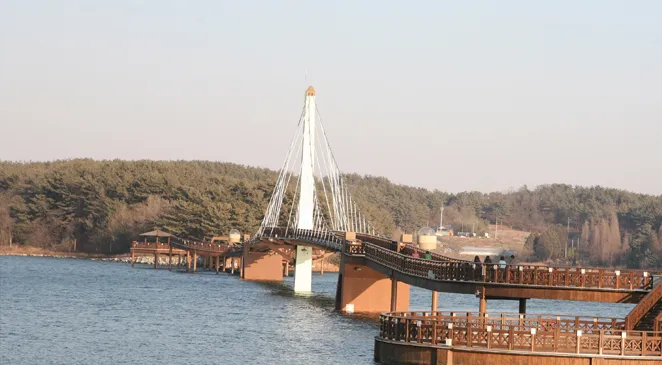
▲ 낮에 본 은파 물빛다리. 호수 위로 데크 다리가 이어진다 사진=군산시
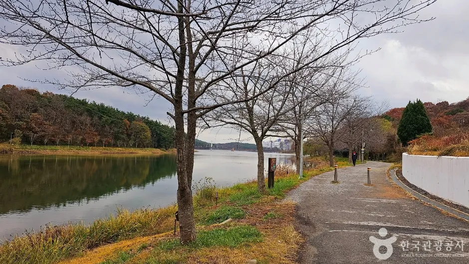
▲ 물가 산책로와 나무들. 늦가을이면 낙엽이 진다 사진=한국관광공사
✅ 은파 야경 방문 팁
· 물빛다리 조명은 야간에 켜지고 이용시간은 23:00까지(군산시 공식)
· 음악분수는 현재 가동 여부를 공식 확인하지 못했다 — 분수를 목적으로 가지 말고 물빛다리 야경을 중심에 두자
· 군산시 안내에는 가을에 만남의 광장에서 시작되는 산책로를 따라 알밤을 줍는 코스도 소개돼 있다
· 순환도로는 야간 보행자·자전거가 많으므로 서행 필수, 일몰 시각 직전 도착을 권한다(필자 판단)
은파호수공원과 물빛다리 안내는 군산시 공식 관광 페이지에서 확인 가능하다. 군산시 은파호수공원 안내 바로가기
6. 월요일에 가면 낭패 — 휴관일·운영시간 한눈에
원도심 시설은 대부분 월요일 휴관이다. 여러 곳을 묶어 돌 때는 아래 표로 요일부터 확인하자. 출처가 다른 항목은 근거를 함께 적었다.
| 시설 | 운영시간 | 휴관·휴무 | 근거 |
|---|---|---|---|
| 근대역사박물관 | 3~10월 09:00~18:00 (입장 17:30) | 1월 1일, 매주 월요일 | 박물관 공식 |
| 근대미술관 | 09:00~18:00 | 매주 월요일, 1월 1일 | 한국관광공사 |
| 근대건축관 | 3~10월 09:00~18:00 (입장 17:30) | 한국관광공사는 1월 1일만 표기 — 박물관 통합권 공통 기준(월요일)과 다르니 방문 전 확인 | 한국관광공사 / 박물관 공식 |
| 옛 군산세관(호남관세박물관) | 09:00~18:00 | 매주 월요일 | 한국관광공사 |
| 초원사진관 | 월 09:00~18:00 / 화~일 09:00~21:30 | 매달 첫째·셋째 월요일 | 한국관광공사 |
| 경암동 철길마을 | 상시 개방 | 연중무휴 | 군산시·한국관광공사 |
| 은파호수공원 | 물빛다리 09:00~23:00 | 연중무휴 | 군산시 공식 |
✅ 요일 선택 체크
· 화~일 방문이면 박물관·미술관·세관을 모두 볼 수 있다
· 월요일에는 철길마을과 은파(연중무휴)만 중심으로 일정을 짠다
· 시설별 문의: 박물관 063-454-7870 / 미술관 063-446-9812 / 세관 063-730-8721
7. 하루 코스 제안 — 주차 한 번으로 원도심, 저녁엔 은파
| 시간 | 일정 | 주차·이동 |
|---|---|---|
| 09:30 | 시간여행마을·박물관 일대 주차, 박물관 통합권 구매 | 월요일 휴관 주의 |
| 10:00~13:00 | 박물관→미술관→건축관→옛 군산세관 도보 관람 | 같은 해망로 일대 |
| 13:30 | 초원사진관(무료 개방) | 주차 불가, 걸어서 이동 |
| 14:30 | 경암동 철길마을 | 연휴·주말 혼잡, 차량 이동 |
| 16:30~ | 은파호수공원 산책·물빛다리 야경 | 공원 주차 가능, 요금 확인 필요 |
8. 요약
군산근대역사박물관은 3~10월 09:00~18:00, 월요일 휴관이며 박물관 통합권(박물관+미술관+건축관+위봉함)은 성인 3,000원이다. 원도심 시간여행마을(내항1길 8) 일대 주차장은 무료로 소개되지만 군산시 공식 요금표는 확인하지 못했고, 경암동 철길마을은 주차 무료로 표기되나 연휴에 혼잡하다.
은파호수공원은 물빛다리 09:00~23:00, 순환도로 약 6km로 저녁 코스에 적합하다. 다만 음악분수는 2022년 음악 장치 고장 보도가 있어 현재 운영을 확인하지 못했다. 원도심에 한 번 주차하고 도보 관람한 뒤 철길마을과 은파로 이동하는 동선이 효율적이며, 월요일에는 박물관·미술관·세관이 쉰다.